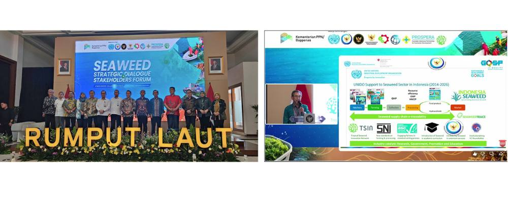

Seaweed Strategic Dialogue 2025: UNIDO Reaffirms Long-Term Commitment to Advancing Indonesia’s Seaweed Industry

Jakarta (12/25), Seaweed has been designated as one of Indonesia’s priority commodities under the National Medium-term Development Plan (RPJMN) 2025–2029 , reflecting its strategic role in supporting sustainable economic growth and coastal livelihoods. A series of Focus Group Discussions (FGDs) involving key stakeholders has been conducted to identify challenges across the seaweed value chain, from upstream to downstream stages.
At the upstream level, discussions highlighted main constraints such as the limited availability of high-quality seedlings, low productivity, and the continued use of non-sustainable plastic bottles as buoys in farming practices. Downstream challenges include limited processing capacity, insufficient product diversification, and the need to strengthen value-added seaweed-based industries. In addition, market potential and access, effective cross-sectoral management, and stronger collaboration between central and regional stakeholders emerged as critical issues to be addressed within the Action Plan.
To accelerate the finalization of the Action Plan document, UNIDO, in collaboration with the National Development Planning Agency (Bappenas) as the orchestrator of cross-sectoral development, convened a consultative forum and stakeholder dialogue titled “Seaweed Strategic Dialogue & Stakeholder Forum”. The event was held on 16 December 2025 at the Bappenas Building in Jakarta and brought together representatives from academia, business actors, and government institutions.

The forum served as a strategic platform to align perspectives and consolidate concrete steps toward strengthening a sustainable and value-added seaweed industry in Indonesia. During the discussions, UNIDO reaffirmed its long-term commitment to seaweed development in Indonesia, spanning more than a decade. This support began in 2014 through the SMART-Fish Programme and has continued under the Global Quality and Standards Programme (GQSP) Phase I and the ongoing Phase II.
UNIDO also underscored the importance of Pillar 5 of the Action Plan, which focuses on strengthening institutions and harmonizing policies. This pillar is considered crucial for creating a conducive business environment, enhancing coordination among stakeholders, and attracting investment in the seaweed sector. Furthermore, UNIDO emphasized the need for efficient zoning determination and adaptive policies to support the development of seaweed-based products as key drivers in strengthening Indonesia’s seaweed industry.
With a more targeted action plan, clear and effective zoning, and adaptive, responsive regulations, Indonesia’s seaweed industry is well positioned to unlock its full potential and move toward a more sustainable, competitive, and inclusive future.